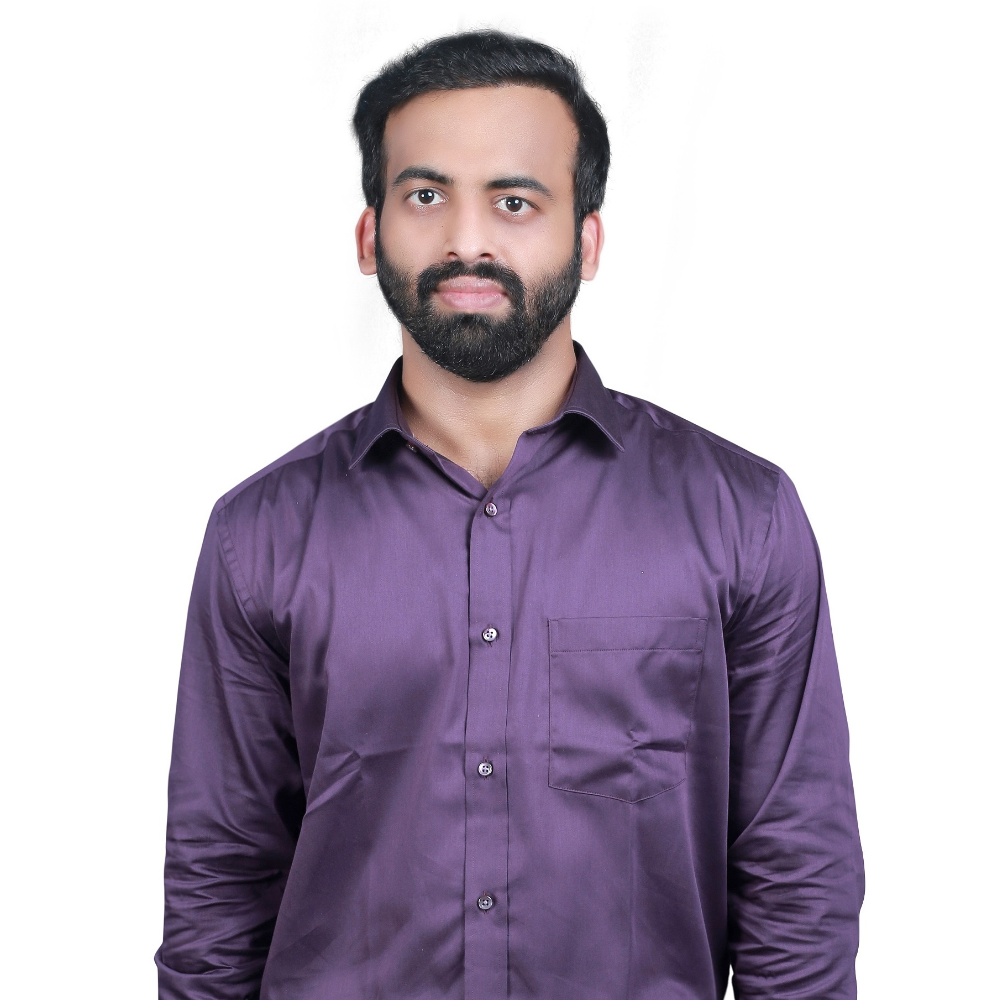

I am a CNRS researcher at the Laboratoire des Signaux et Systèmes (L2S), CentraleSupélec, University Paris-Saclay. My research focuses on information theory, machine learning, mathematical statistics, and quantum information science.
I am interested in theoretical and algorithmic foundations for communication, inference, learning systems, privacy-aware algorithms, and quantum information processing.
Ph.D., Electrical and Electronic Engineering
Imperial College London, 2019
Our work on Performance Guarantees for Quantum Neural Estimation of Entropies has been accepted for publication in Quantum.
Our work on One-shot Interference Channel Simulation accepted at ISIT 2026 to be held in Guangzhou, China.
Our work on Quantum Maximum Likelihood Prediction via Hilbert Space Embeddings is available at arxiv.org/abs/2602.18364
S. Sreekumar, Z. Goldfeld, and M. Wilde
Quantum, 2026A. Nema, S. Sreekumar and M. Berta
IEEE Transactions on Information Theory, 2026S. Sreekumar, C. Hirche, H-C. Cheng, and M. Berta
Annales Henri Poincaré, 2025T. Rippchen, S. Sreekumar and M. Berta
IEEE Transactions on Information Theory, 2025S. Sreekumar and M. Berta
IEEE Transactions on Information Theory, 2025S. Sreekumar, Z. Goldfeld and K. Kato
IEEE Transactions on Information Theory, 2024S. Sreekumar and Z. Goldfeld
Journal of Machine Learning Research, 2022